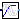
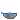
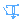
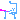

Utilities for quasi-static fundamental wave machines
Extends from Modelica.Icons.UtilitiesPackage (Icon for utility packages).
| Name | Description |
|---|---|
|  VfController | Voltage-Frequency controller |
| TerminalBox | Terminal box Y/D-connection |
|  MultiTerminalBox | Terminal box Y/D-connection |
|  SwitchedRheostat | Rheostat which is shortened after a given time |
| CurrentController | Current controller |
|  SwitchYD | Y-D-switch |
Voltage-Frequency controller
This is a simple voltage-frequency controller. The amplitude of the voltage is linear dependent (VNominal/fNominal) on the frequency (input signal u), but limited by VNominal (nominal RMS voltage per phase). An
m quasi-static phasor signal is provided as output signal y, representing complex voltages.
The output voltages may serve as inputs for complex voltage sources with phase input. Symmetrical voltages are assumed.
|
|
| Name | Description |
|---|---|
| m | Number of phases |
| orientation[m] | Orientation of phases [rad] |
| VNominal | Nominal RMS voltage per phase [V] |
| fNominal | Nominal frequency [Hz] |
| BasePhase | Common phase shift [rad] |
| Name | Description |
|---|---|
| y[m] | Complex quasi-static voltages (RMS) |
| u | Frequency input (Hz) [Hz] |
Terminal box Y/D-connection
This model represents the internal connections of the terminal box of an electric machine.
The parameter terminalConnection is used to switch between star
(terminalConnection = "Y") and delta (terminalConnection = "D") connection.
The (single-phase) connector starPoint is only available if star connection is selected.
| Name | Description |
|---|---|
| m | Number of phases |
| terminalConnection | Choose "Y" for star or "D" for delta connection |
| Name | Description |
|---|---|
| plug_sp | To be connected with positive stator plug |
| plug_sn | To be connected with negative stator plug |
| plugSupply | To be connected with grid |
| starpoint | Star point |
Terminal box Y/D-connection
This model represents the internal connections of the terminal box of an electric machine.
The parameter terminalConnection is used to switch between star
(terminalConnection = "Y") and delta (terminalConnection = "D") connection.
The connector starPoint is only available if star connection is selected.
This connector is a plug with
mSystem = Electrical.Polyphase.Functions.numberOfSymmetricBaseSystems(m) phases,
representing the star points of each base system; see
Modelica.Magnetic.FundamentalWave.UsersGuide.Polyphase.
| Name | Description |
|---|---|
| m | Number of phases |
| terminalConnection | Choose "Y" for star or "D" for delta connection |
| Name | Description |
|---|---|
| plug_sp | To be connected with positive stator plug |
| plug_sn | To be connected with negative stator plug |
| plugSupply | To be connected with grid |
| starpoint | Star point |
Rheostat which is shortened after a given time
Switched rheostat, used for starting induction motors with slipring rotor:
The external rotor resistance RStart is shortened at time tStart.
| Name | Description |
|---|---|
| m | Number of phases |
| RStart | Starting resistance [Ohm] |
| tStart | Duration of switching on the starting resistor [s] |
| Name | Description |
|---|---|
| plug_p | To positive rotor plug |
| plug_n | To negative rotor plug |
Current controller
This is a simple current controller.
The desired RMS values of d and q component of the quasi-static space phasor current in rotor fixed coordinate system are the inputs id_rms and iq_rms.
Using the given rotor position input phi, the quasi-static m-phase output currents i[m] are calculated.
The model output can be used to feed a quasi-static current source with phase input to supply synchronous machines.
| Name | Description |
|---|---|
| m | Number of phases |
| p | Number of pole pairs |
| gamma0 | Offset added to electrical rotor angle [rad] |
| Name | Description |
|---|---|
| id_rms | |
| iq_rms | |
| phi | |
| I[m] | Polyphase current phasors |
| gamma | Reference angle of source [rad] |
Y-D-switch
| Name | Description |
|---|---|
| m | Number of phases |
| Ron | Closed switch resistance [Ohm] |
| Goff | Opened switch conductance [S] |
| delayTime | Time delay [s] |
| Name | Description |
|---|---|
| plugSupply | To grid |
| plug_sp | To positive stator plug |
| plug_sn | To negative stator plug |
| control[m] |